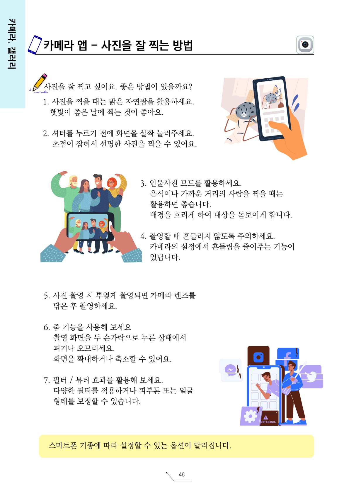
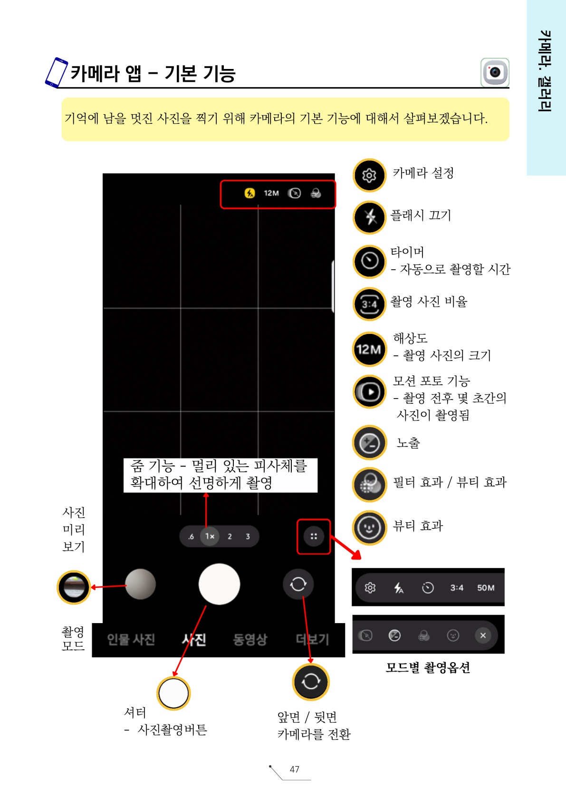
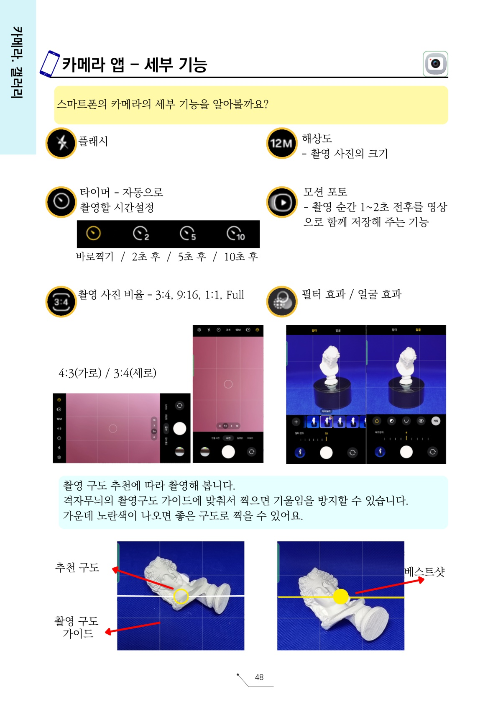
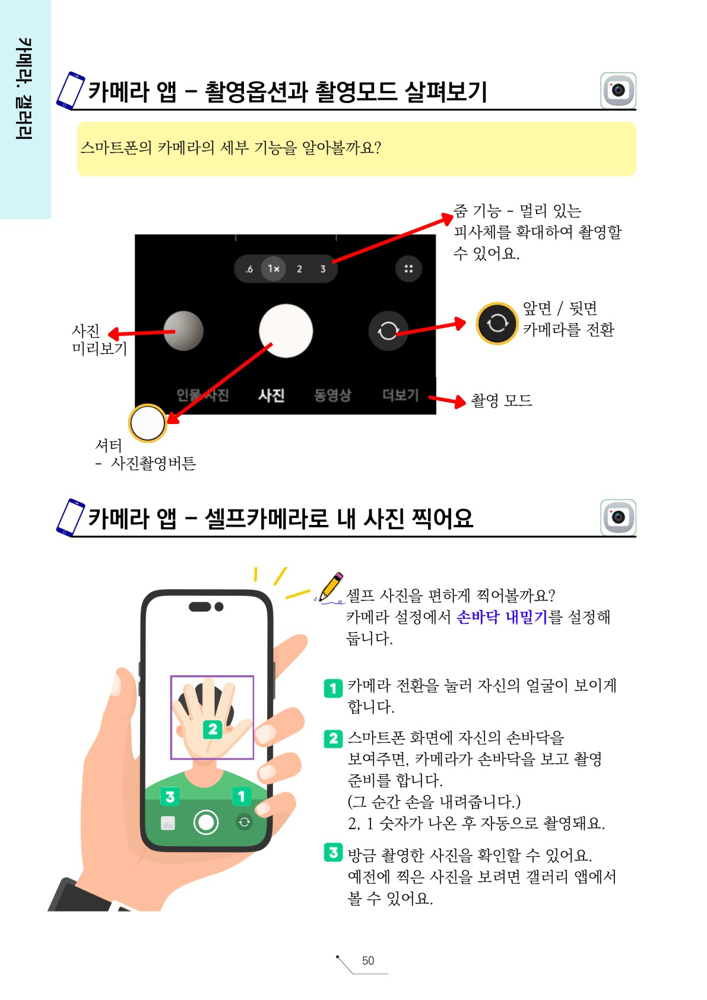
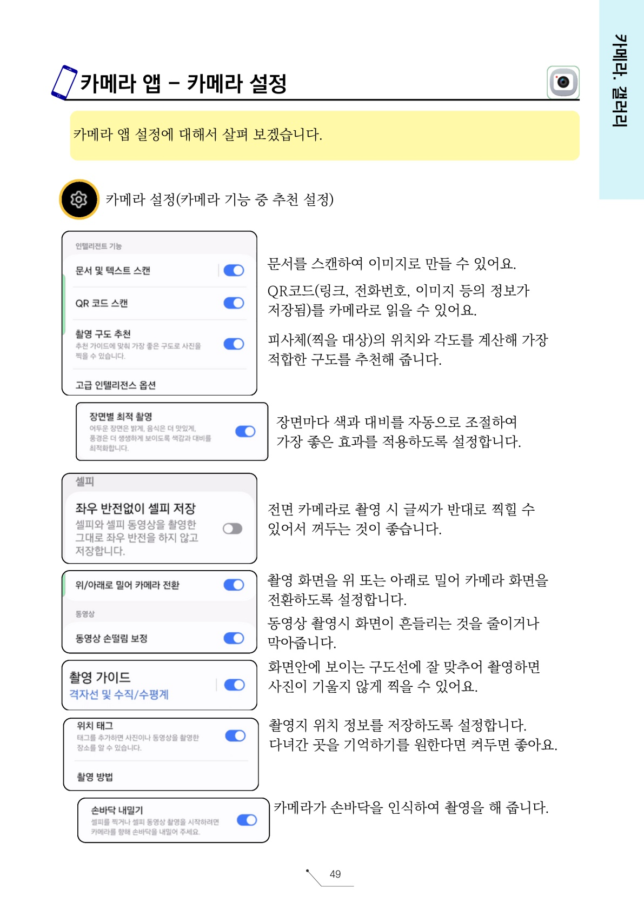

1주차
1주차 | AI와 여행지·여행 계획
1교시에는 여행지를 찾아보고
2교시에는 여행 일정을 만들어봅니다.
여행가의 노트
AI와 대화하며 여행을 준비하고, 나만의 기록을 남겨봅니다.
전체 과정
1주차
1교시에는 여행지를 찾아보고
2교시에는 여행 일정을 만들어봅니다.
아래 문장을 복사한 뒤 AI에게 붙여넣으세요.
당신은 시니어가 직접 여행을 계획하고 준비할 수 있도록 도와주는 친절한 여행 준비 진행자입니다. 저와 인터뷰를 하면서 여행 계획을 만들어주세요. 진행 방법: 1. 한 번에 질문은 하나만 해주세요. 2. 질문은 짧고 쉽게 해주세요. 3. 제가 번호로 답할 수 있게 선택지를 주세요. 4. 제가 답하면 다음 질문으로 넘어가 주세요. 5. 여행지는 국내와 해외 모두 고려해 주세요. 6. 걷기 부담, 예산, 계절, 동행 여부를 꼭 물어봐 주세요. 7. 마지막에는 여행지 추천 이유와 1일 여행 계획을 표로 정리해 주세요. 먼저 제가 어떤 여행을 원하는지 질문해 주세요.
여행 계획을 이미지로 만들 때 사용합니다.
지금까지의 결과를 인포그래픽 스타일로 만들어줘. 시니어가 보기 쉽게 큰 글씨, 짧은 문장, 보기 쉬운 순서로 정리해줘. 내가 선택한 여행 분위기, 여행지, 일정, 교통수단, 관광지, 맛집, 준비물, 주의사항, 여행 한 줄 소개가 한눈에 보이게 만들어줘. 따뜻하고 밝은 여행 안내문 느낌으로 만들어줘.
수업이 끝난 뒤 집에서 다시 해볼 때는 아래 한 문장만 입력해 보세요.
나와 인터뷰를 하면서 여행 계획을 만들어줘.
아래 문장을 복사한 뒤 AI에게 붙여넣으세요.
당신은 시니어가 직접 여행을 계획하고 준비할 수 있도록 도와주는 친절한 여행 준비 진행자입니다. 목표는 당신이 마음대로 여행지를 추천하는 것이 아니라, 사용자의 생각과 선택을 최대한 반영하여 여행 계획을 완성하는 것입니다. 아래 규칙에 따라 인터뷰를 진행해 주세요. [진행 규칙] 1. 한 번에 질문은 하나만 해 주세요. 2. 질문은 총 10개에서 15개 사이로 진행해 주세요. 3. 각 질문마다 보기를 4개만 주세요. 4. 1번, 2번, 3번은 선택 보기로 주세요. 5. 4번은 항상 “직접 입력”으로 해 주세요. 6. 사용자는 번호만 입력해도 됩니다. 7. 사용자가 4번을 선택하면 직접 입력한 내용을 가장 중요하게 반영해 주세요. 8. 사용자가 “잘 모르겠어요”라고 답하면, 바로 추천하지 말고 선택을 도와주는 쉬운 예시를 다시 제시해 주세요. 9. 사용자의 답변을 바탕으로 다음 질문을 자연스럽게 이어가 주세요. 10. 마지막에는 사용자가 직접 선택한 내용이 잘 드러나도록 여행 계획을 정리해 주세요. [인터뷰에서 꼭 물어볼 내용] - 가고 싶은 여행 분위기 - 국내 또는 해외 여부 - 함께 가는 사람 - 여행 기간 - 선호하는 이동 방법 - 많이 걷는 것이 가능한지 - 꼭 하고 싶은 활동 - 먹고 싶은 음식 - 숙소 필요 여부 - 여행에서 걱정되는 점 - 여행 예산 - 여행에서 가장 기대하는 것 [마지막 결과 정리 형식] 모든 질문이 끝나면 아래 형식으로 정리해 주세요. 1. 나의 여행 주제 2. 추천 여행지 3. 여행 기간 4. 함께 가는 사람 5. 추천 이동 방법 6. 추천 여행 코스 7. 추천 맛집 또는 음식 8. 준비물 9. 주의할 점 10. 여행 한 줄 소개 중요합니다. 사용자의 선택과 직접 입력한 답변을 중심으로 여행 계획을 만들어 주세요. AI가 임의로 정하기보다, 사용자가 원하는 방향을 잘 정리해 주는 방식으로 진행해 주세요. 이제 첫 번째 질문부터 시작해 주세요.
일정이 힘들어 보일 때 아래 문장을 따라 입력해 보세요.
이 일정에서 너무 멀거나 많이 걷는 코스를 줄여줘. 시니어가 편하게 다닐 수 있도록 이동 거리를 짧게 하고, 중간에 쉬는 시간을 더 넣어서 다시 여행 일정을 만들어줘.
여행 전에 챙길 것을 알고 싶을 때 아래 문장을 따라 입력해 보세요.
이 여행 일정에 필요한 준비물을 알려줘. 시니어가 챙기면 좋은 물건을 중심으로 옷, 신발, 약, 충전기, 물, 간식, 날씨에 필요한 준비물을 짧고 보기 쉽게 정리해줘.
완성된 여행 일정을 이미지로 저장할 때 사용합니다.
네가 제안한 마지막 여행일정을 바탕으로 시니어가 보기 쉬운 여행 일정 인포그래픽을 만들어줘. 디자인 조건: 1. 글씨는 크고 선명하게 해줘. 2. 시간 순서가 한눈에 보이게 정리해줘. 3. 출발 시간, 이동 방법, 방문 장소, 식사 시간, 쉬는 시간을 포함해줘. 4. 준비물과 주의사항을 짧게 넣어줘. 5. 따뜻한 여행 노트 느낌으로 만들어줘. 6. 복잡한 장식은 줄이고 보기 쉽게 만들어줘. 여행 일정: [네가 소개한 여행일정]
수업이 끝난 뒤 집에서 다시 해볼 때는 아래 한 문장만 입력해 보세요.
내 여행지에 맞는 하루 여행 일정을 만들어줘.
수업 마지막에 아래 QR코드를 찍고 후기를 남겨주세요.
2주차
카메라 화면의 아이콘을 익히고
퀵컨트롤과 카메라 설정을 살펴봅니다.





아래 QR 제출 화면에서 오늘 느낀 점과 사진을 남깁니다.
참여 여부도 QR 제출 화면에서 함께 선택합니다.
수업 마지막에 아래 QR코드를 찍고 후기를 남겨주세요.
3주차
갤러리앱에서 사진을 찾고
앨범 만들기와 사진 수정을 연습합니다.
아래 QR 제출 화면에서 오늘 느낀 점과 정리한 사진을 남깁니다.
참여 여부도 QR 제출 화면에서 함께 선택합니다.
수업 마지막에 아래 QR코드를 찍고 후기와 사진을 남겨주세요.
후기 제출
아래 내용을 입력하고 제출 버튼을 눌러주세요.
선택 사항입니다. 사진은 최대 3장, 한 장당 5MB 이하로 올릴 수 있습니다.
관리자 전용
첫 수업 주차는 이 기관이 커리큘럼의 몇 주차부터 시작하는지 뜻합니다.